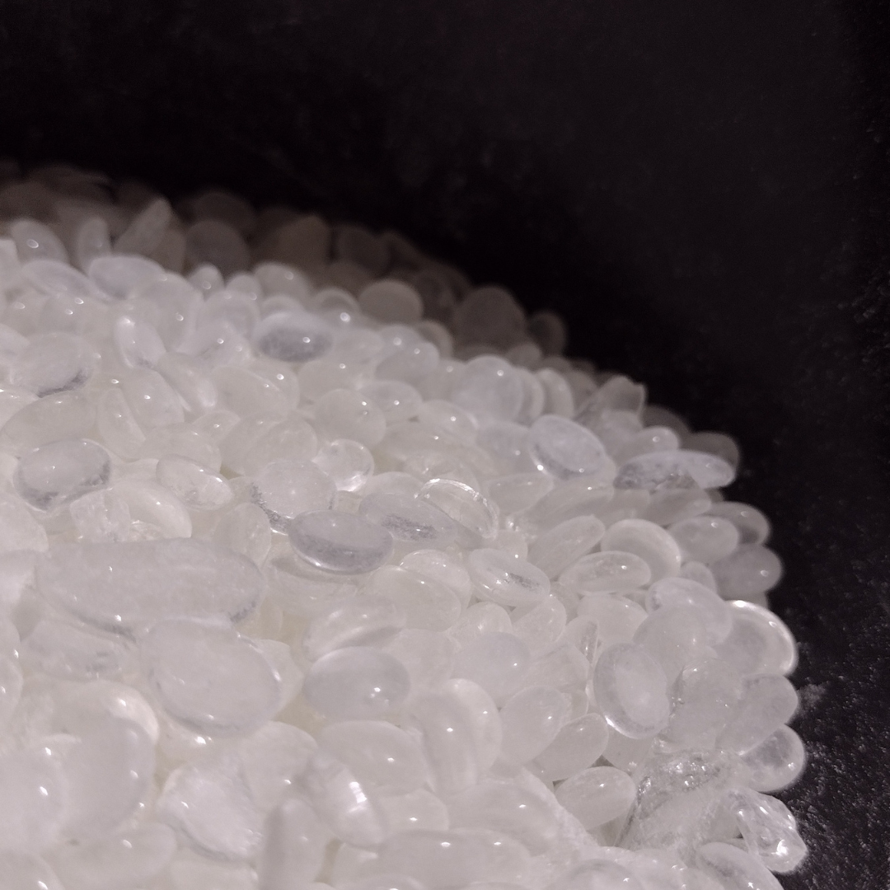
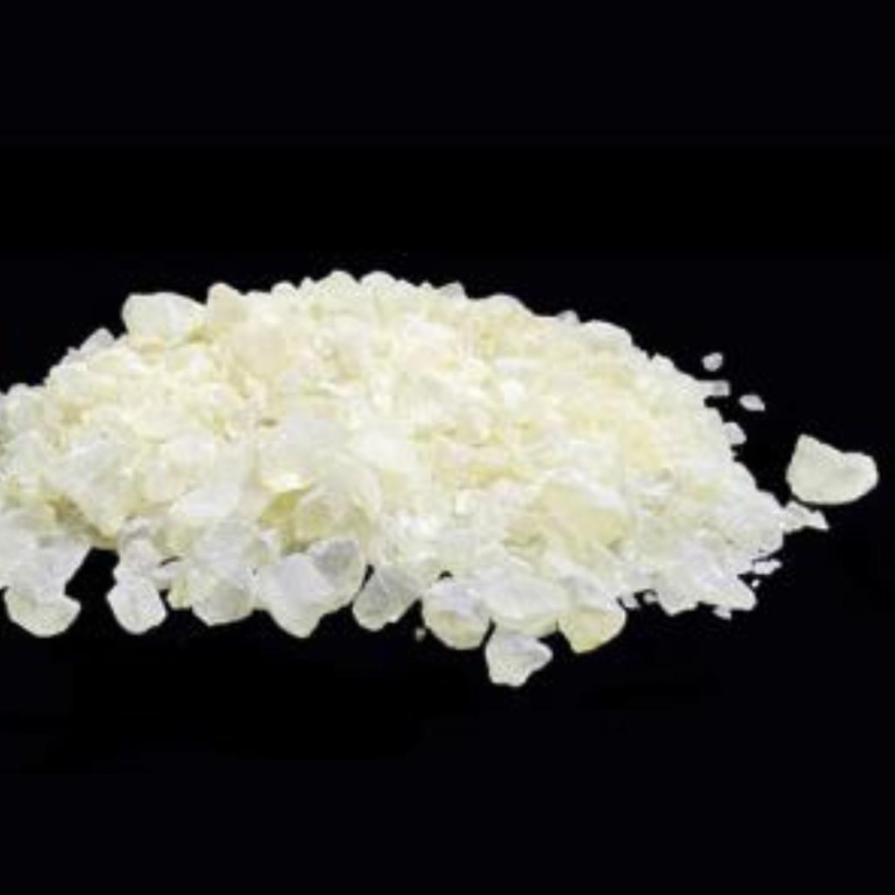

Resina Aldeído
É uma Resina solúvel em diversos solvente e compatível com diversas resinas, porem não é compatível em agua, e possui excelente resistência a amarelamento. É utilizado principalmente em moagem universal de pigmentos e aplicado na formulação de diversos revestimentos, é considerado um excelente tipo de veiculo para pintura, pode melhoras consideravelmente a adesão, dureza e brilho. Pode ser considerado em algumas formulações como um aditivo multifuncional devido a sua multifuncionalidade.
Resina Cetônica
É uma Resina policetona de excelente compatibilidade, solubilidade e transparência, que lhe permite melhorar o brilho, aderência e dureza. Motra excelente molhabilidade para moagem em pigmento universal e pode melorar o conteúdo solido quando aplicado em tintas.
